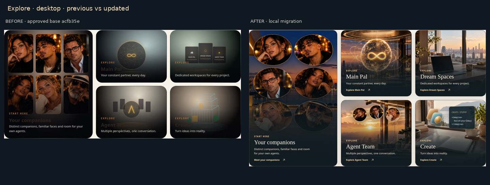
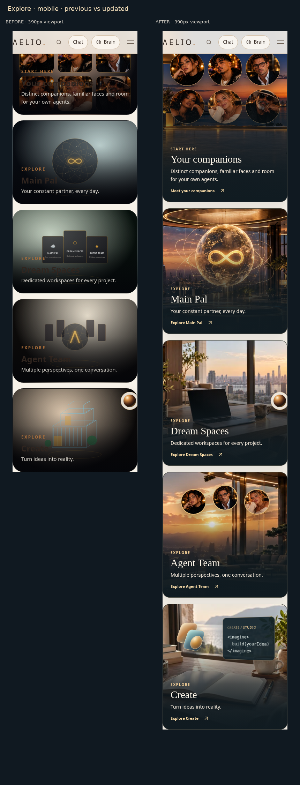
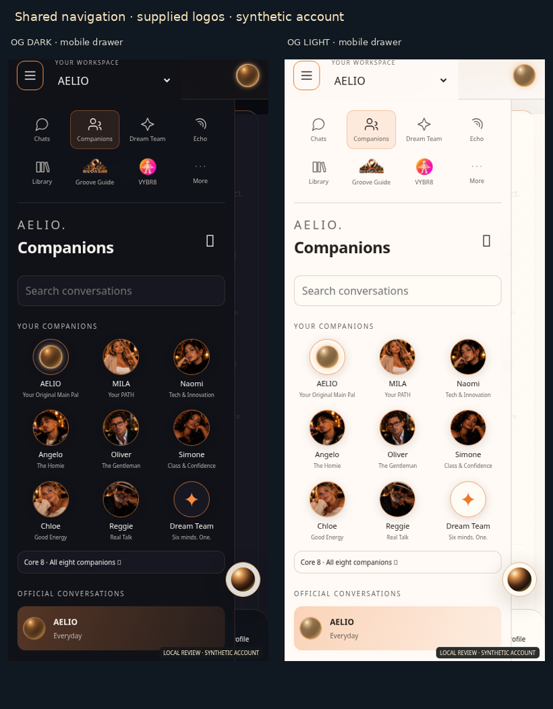
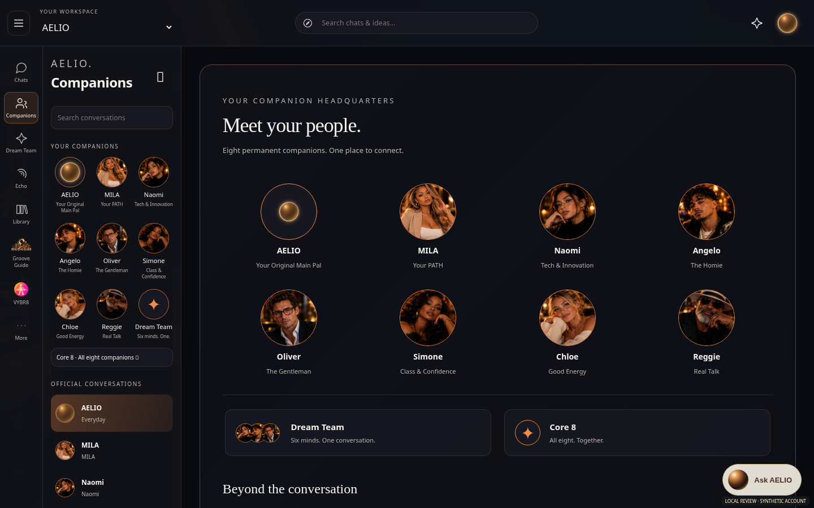
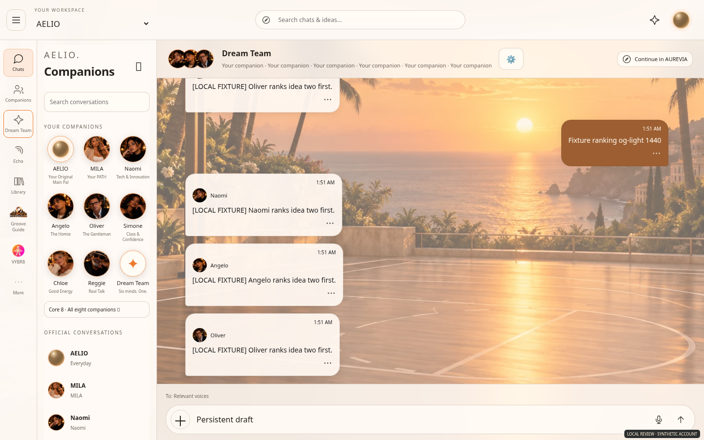
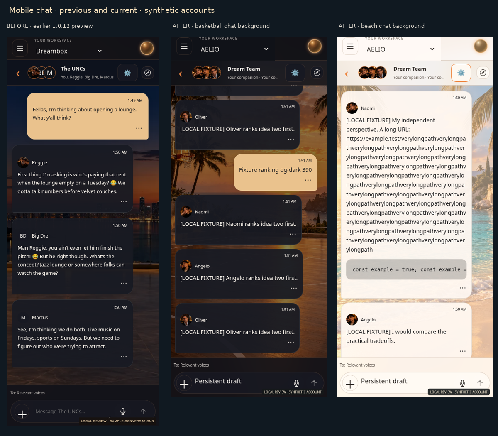
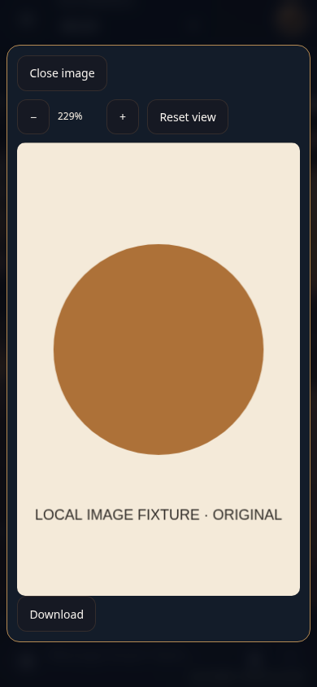

Local migration based on acfb35e. Nothing pushed or deployed. Account messages and history shown here are synthetic fixtures. Mobile layouts tested in Chromium; physical iOS Safari is unverified. AUREVIA reference comparisons →






